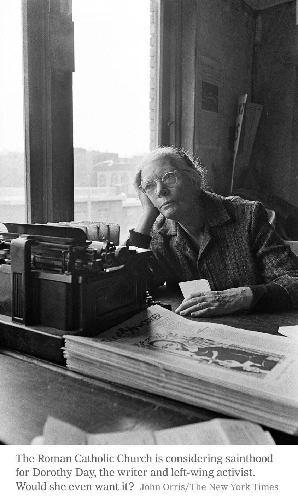

Mobile uploads
I know Dorothy Day would not want to be a Saint in the Catholic Church. But I love her because she is such a crossover, complicated person. It is much easier to white wash MLK than it will be to whitewash Dorothy Day. I think it would be good for the church. So my vote is to canonize her. MAKE HER A SAINT.